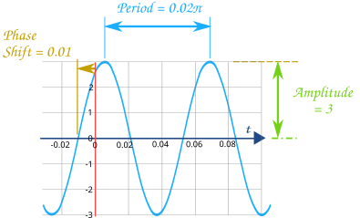
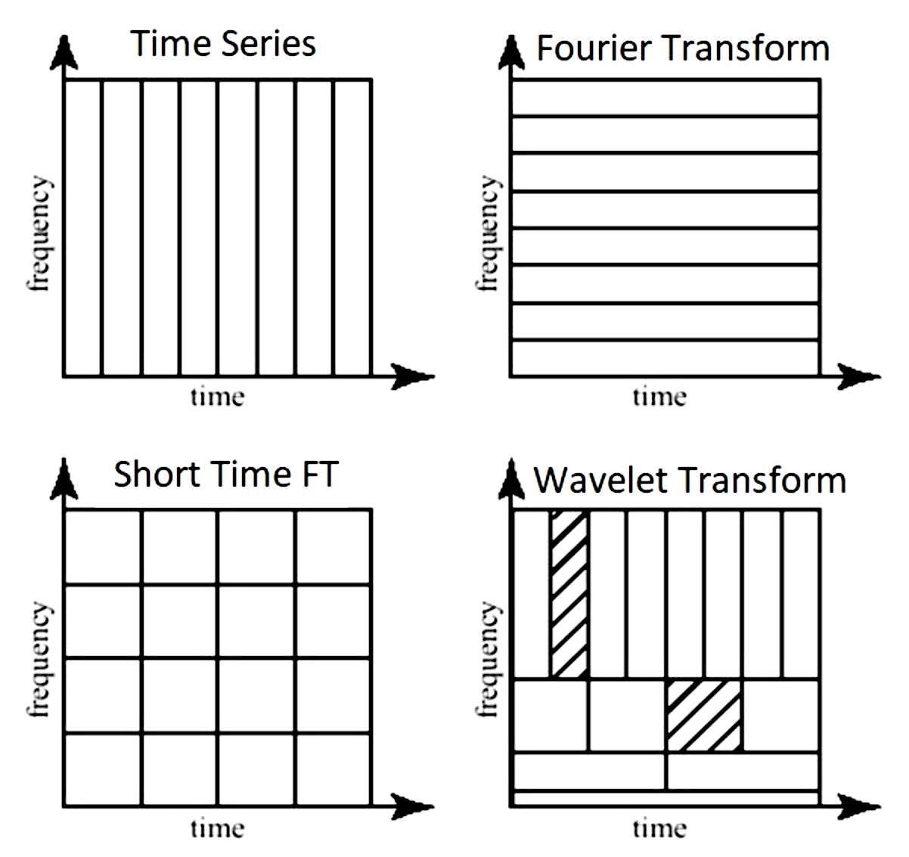
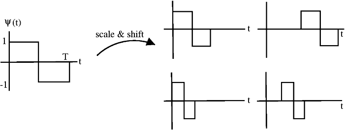
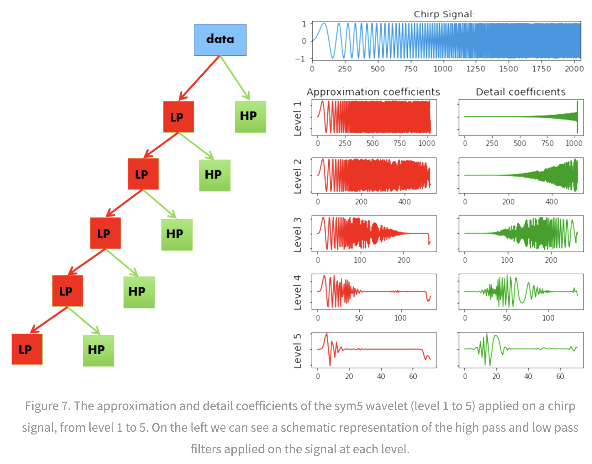
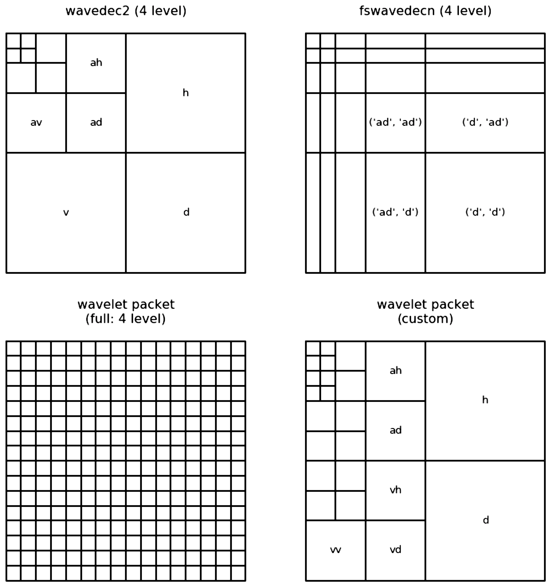

signals
view markdownbasics
- dirac-delta infinity at one point, zero everywhere else

intro
- signal can be continuous or discrete based on its domain (not values)
- analog signal - continuous in time
- sampling - the process of taking individual values of a continuous-time signal
- sampling rate $f_s$ - the number of samples taken per second (Hz)
- sampling period - time interval between samples
- digital signal - discrete in time and value
- ”If a function x(t) contains no frequencies higher than B hertz, it is completely determined by giving its ordinates at a series of points spaced 1 2B seconds apart” –Shannon
- signals are usually studied in
- time-domain (with respect to time)
- frequency-domain (with respect to frequency) - use Fourier transform
- time-frequency representation (TFR) - use short-time Fourier transform (STFT) or wavelets
- harmonic analysis - studies relationship between time and frequency domain
- common filters
- low-pass filter - pass only low frequencies
- high-pass filter - pass only high frequencies
- band-pass filter - pass only frequencies within a specified range
- band-stop filter - pass only frequences outside a specified range
- power spectrum - how much of the signal is at a frequency $\omega$? - square of the magnitude of the coefficients of the Fourier coefficients for $\omega$

fourier analysis
- good tutorial
- Fourier analysis - study of way general functions can be represented by Fourier series
- Fourier series - periodic function composed of harmonically related sinusoids, combined by a weighted summation
- one period of the summation can approximate an arbitrary function in that interval
- (continuous) Fourier transform $\hat f$: time (x) -> frequency (u)
- $\hat{f}(u) = \int_{-\infty}^{\infty} f(x)\ e^{-2\pi i x u}\,dx$
- $f(x) = \int_{-\infty}^{\infty} \hat f(u)\ e^{2\pi i x u} \,du$
- 2-dimensional (good ref)
- $F(u, v) = \int_{-\infty}^{\infty} \int_{-\infty}^{\infty} f(x, y) e^{-i 2 \pi (ux + vy)}\,dx\, dy$
- inverse: $f(x,y) = \int_{-\infty}^{\infty} \int_{-\infty}^{\infty} F(u, v) e^{i 2 \pi (ux + vy)}\,du\, dv$
- for each basis, magnitude of vector [u, v] is frequency and direction gives orientation
- Fourier transform of Gaussian is Gaussian
- discrete-time Fourier transform - values are still continuous
- $X_{2\pi}(\omega) = \sum_{n=-\infty}^{\infty} x_n \,e^{-i \omega n}$
- $\omega$ is frequency
- $X_{2\pi}(\omega) = \sum_{n=-\infty}^{\infty} x_n \,e^{-i \omega n}$
- discrete Fourier transform (DFT or the analysis equation) - this is by far the most common
- $\begin{align}X_k &= \sum_{n=0}^{N-1} x_n e^{-2\pi i k n / N}\&=\sum_{n=0}^{N-1} x_n \left[ \cos(2\pi k \frac n N ) - i \sin(2 \pi k \frac n N )\right]\end{align}$
- larger k is higher freq.
- inverse transform: $x_n = \frac{1}{N} \sum_{k=0}^{N-1} X_k\cdot e^{i 2 \pi k n / N}$
- $x_0, x_1, … x_{N-1}$ is a sequence of N complex numbers (i.e. time domain) and we transform to another sequence of complex numbers $X_0, X_1, …, X_{N-1}$
- we write $\mathbf X = \mathcal F (\mathbf x)$
- vectors $u_k = \left[\left. e^{ \frac{i 2\pi}{N} kn} \;\right|\; n=0,1,\ldots,N-1 \right]^\mathsf{T}$ form an orthogonal basis over the set of N-dimensional complex vectors
- interpreting units
- a frequency of 1/N would correspond to a period of N
- use $2\pi/N$ so that it goes through one cycle with period of N
- the n=0 parts correspond to a constant
- all other frequencies are integer multiples of the first fundamental frequency
- finding coefs: basically want to use the correlation between the signal and the basis element (this is what the summation and muliptlying does)
- real part - corresponds to even part of the signal (the cosines)
- imaginary part - corresponds to odd parts of the signal
- a frequency of 1/N would correspond to a period of N
- can be quickly computed using the Fast Fourier Transform in $O(n \log n)$ instead of $O(n^2)$
- inverse discrete Fourier Transform (IDFT)
- windowed fourier transform - chop signal into sections and analyze each section separately
wavelet analysis
- wavelet is localized in both time and frequency information
- different wavelets thus vary in translation, scale, and sometimes orientation
- many choices for wavelet basis, which replaces the sinusoid basis sinusoid $\phi(x) = e^{i 2 \pi k x/N}$
wavelet basics
- $\phi(x)$ = mother wavelet (or analyzing wavelet)
- basis consists of translations and dilations of the mother wavelet $\phi(\frac{x-b}{a})$
- wavelet vocab
- discrete wavelet transform: set $a=2^{-j}, b = k \cdot 2^{-j}$, where $k$ and $j$ are integers
- starts from multiresolution analysis (mallat, 1989)
- continuous wavelet transform: $a > 0, b$ (still a point-by-point, digita transformation)
- orthonormal
- biorthogonal - more relaxed, still enables perfect reconstruction
- undecimated - highly overparameterized, exists at every location
- discrete wavelet transform: set $a=2^{-j}, b = k \cdot 2^{-j}$, where $k$ and $j$ are integers
- website to explore different wavelets
- ex. Haar wavelet (step function on [0, 1]

- define translations and dilations $\phi_{jk}(x) = \text{const} \cdot \phi(2^j x - k)$
- j, k are still integers
- this is still orthogonal
- ex. Gabor==Morlet wavelet: $\phi_\sigma(x) = c \cdot \underbrace{e^{-\frac 1 2 x^2}}{\text{gaussian window}} \underbrace{(e^{i\sigma x} - \kappa\sigma)}_{\text{frequency}}$
- ex. Mexican hat wavelet - 2nd deriv of Gaussian pdf (in 2d, called Laplacian of Gaussian)
- ex. Daubechies wavelet
- ex. coiflet
- ex. scattering transform
- ex. Mallat’s MRA - stretch/scale wavelets in a smart way to tile space
- ex. Haar wavelet (step function on [0, 1]
- how are wavelets implemented? (figs taken from blog)
- note: Continuous Wavelet Transform, (CWT), and the Discrete Wavelet Transform (DWT), are both, point-by-point, digital, transformations that are easily implemented on a computer
- DWT restricts the value of the scale and translation of the wavelets (e.g. scale must increase in powers of 2 and translation must be integer)

- The approximation coefficients represent the output of the low pass filter (averaging filter) of the DWT.
- The detail coefficients represent the output of the high pass filter (difference filter) of the DWT
- pywt 2d can decompose in different ways

- wavelet packet uses linear combinations of wavelets
- note: Continuous Wavelet Transform, (CWT), and the Discrete Wavelet Transform (DWT), are both, point-by-point, digital, transformations that are easily implemented on a computer
properties of different wavelet bases
- vanishing moments
- higher number of vanishing moments = more complex wavelet
- more accurate repr. of complex signal
- longer support
- p vanishing moments => polynomials up to pth order will not be identified
- higher number of vanishing moments = more complex wavelet
- regularity
- more vanishing moments = higher regularity
- low regularity - more jagged wavelets, less smooth reconstructions
- invertibility
- requires admissibility condition, which at least requires wavelets have vanishing mean $\int \psi(x) \mathrm{d} x=0$
wavelet analysis
- orthogonal wavelet basis: $\phi_{(s,l)} (x) = 2^{-s/2} \phi (2^{-s} x-l)$
- scaling function $W(x) = \sum_{k=-1}^{N-2} (-1)^k c_{k+1} \phi (2x+k)$ where $\sum_{k=0,N-1} c_k=2, : \sum_{k=0}^{N-1} c_k c_{k+2l} = 2 \delta_{l,0}$
- one pattern of coefficients is smoothing and another brings out detail = called quadrature mirror filter pair
- there is also a fast discrete wavelet transform (Mallat)
- basis of adapted waveform - best basis function for a given signal representation
- differential operator and capable of being tuned to act at any desired scale
more general wavelets
- generalized daubechet wavelet families
- generalized coiflets
- Wavelet families of increasing order in arbitrary dimensions
- Parametrizing smooth compactly supported wavelets
- just for daubuchet
- shearlets - extension of wavelets for finding anisotropic features
- constructed by parabolic scaling, shearing, and translation applied to a few generating functions
- allows for things like stretching an ellipsoid in one direction rather than always having the same size
- curvelets - degree of localisation in orientation varies with scale. In particular, fine-scale basis functions are long ridges